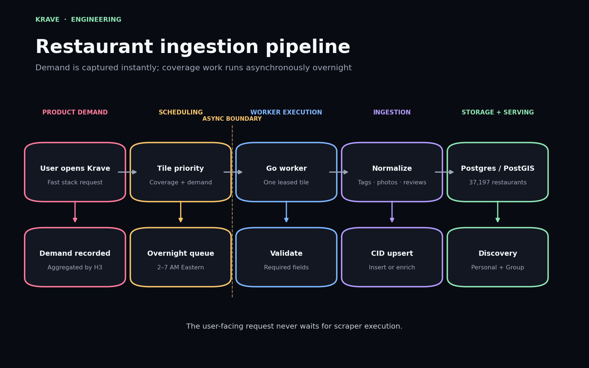
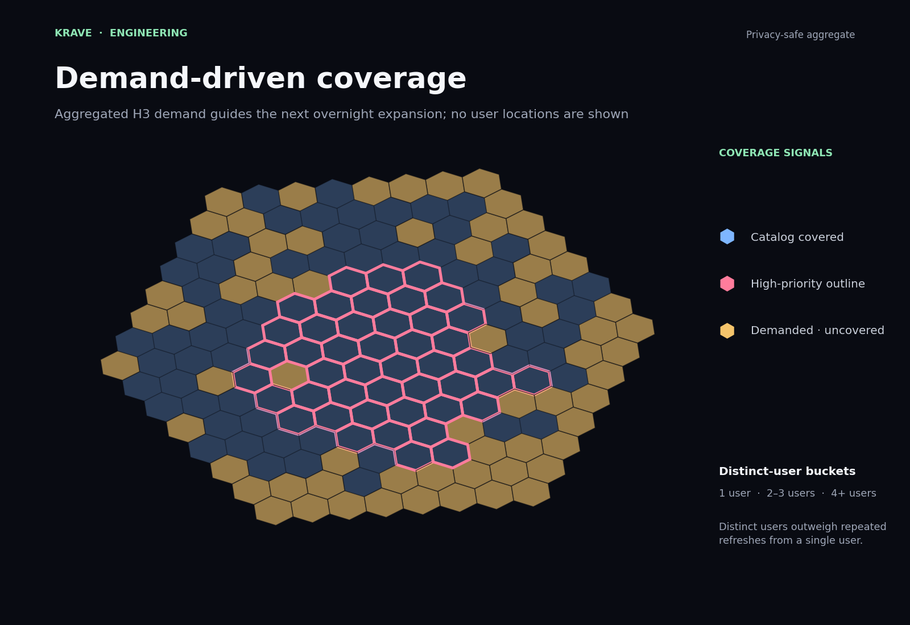
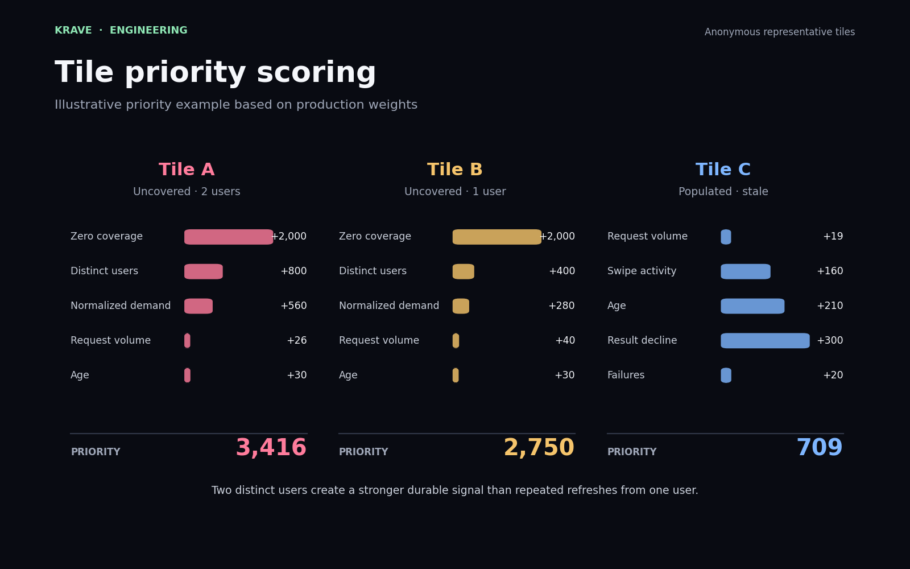
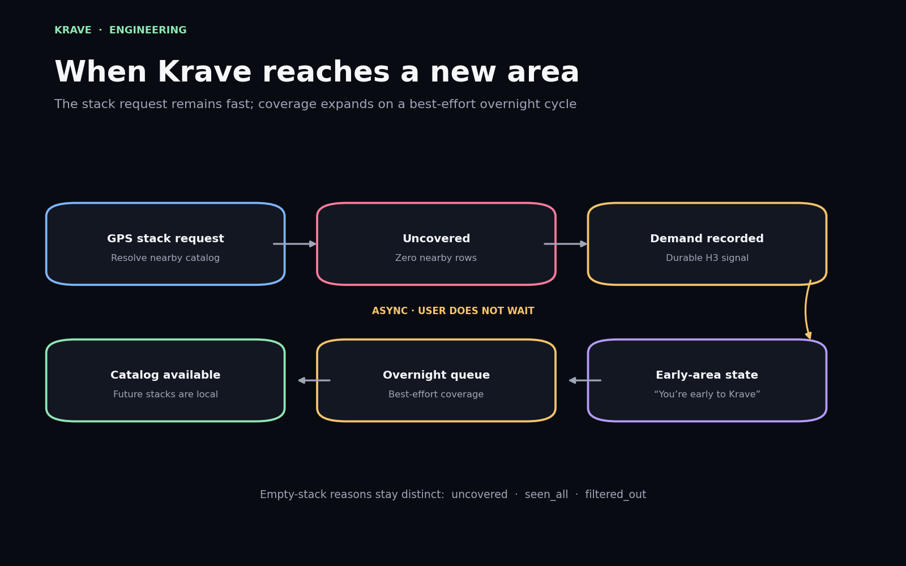
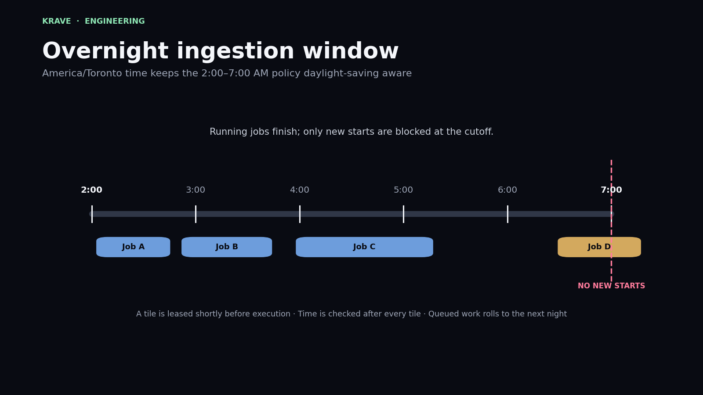
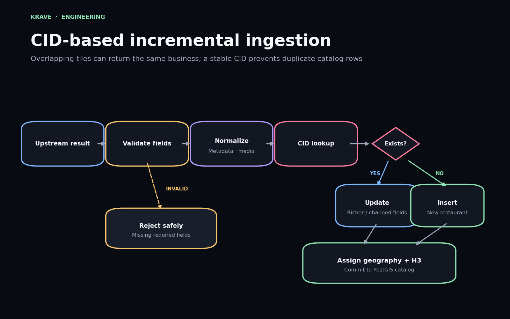
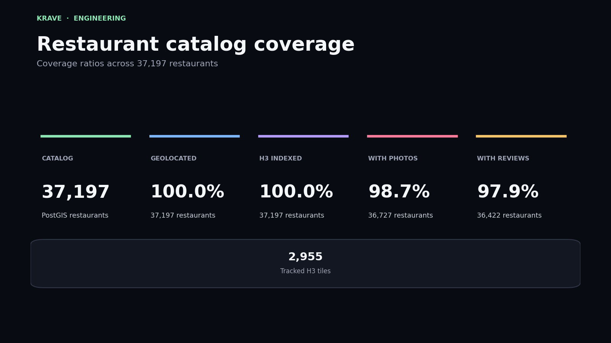
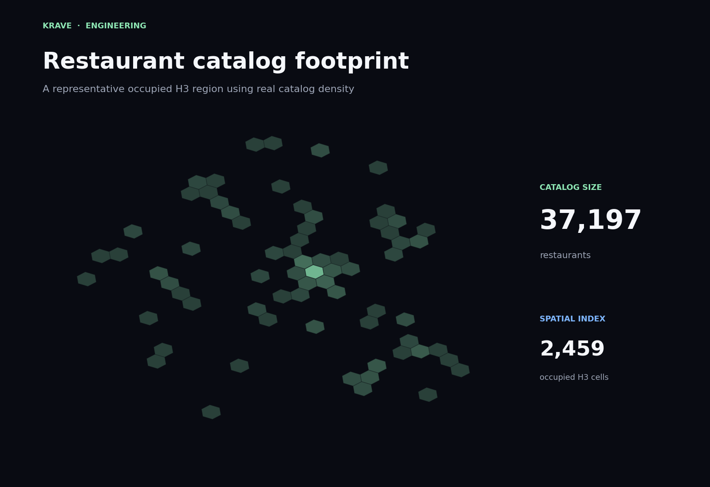

Designing a Scalable Restaurant Ingestion Pipeline
How Krave grows its restaurant catalog through demand-driven coverage, incremental ingestion, and overnight scheduling.

The difficult part is not collecting data once
A restaurant catalog is never finished. New businesses open, existing restaurants close, photos become stale, review counts change, and metadata drifts over time.
The first version of an ingestion system can often be simple: choose a city, collect its restaurants, normalize the results, and store them. That approach becomes less useful once the catalog expands across many regions.
A production system needs to answer a different set of questions: which areas should be refreshed first, how should overlapping results be deduplicated, how can ingestion avoid competing with user traffic, and what should happen when somebody opens Krave in a place the catalog has never covered?
Krave's ingestion pipeline is designed around those questions. The goal is not to rebuild the full catalog every night. The goal is to grow and refresh the parts of the catalog that matter most.
Separating the user request from the ingestion work
A user opening Discover should never wait for a background worker to collect an entire area. The stack request must remain fast, even when the requested location has no catalog coverage.
Krave therefore separates demand capture from execution. The request records an aggregate H3 demand signal and immediately returns the current stack state. A scheduled worker later consumes that demand during the overnight ingestion window.
The user-facing request records what the system should expand next. It does not perform the expansion itself.
This boundary keeps Discover responsive and gives the ingestion system room to prioritize, retry, lease work safely, and stop when the operating window closes.
Growing coverage from real demand
A fixed city list is easy to understand, but it does not adapt to actual usage. One region may have no active users, while another may suddenly receive several requests from people who cannot see any nearby restaurants.
Krave records demand at the H3 tile level. When a stack request reaches an uncovered area, the surrounding cells receive durable demand records. Multiple distinct users create a stronger signal than repeated refreshes from one person.

The demand signal is normalized across the requested area. A larger search radius may touch hundreds of cells, so one request should not give every cell the full weight of an entire user.
The result is a system that expands where Krave is actually being used rather than following a permanently fixed geographic plan.
Prioritizing the next tile
Demand is only one part of scheduling. The worker also considers whether a tile has any catalog coverage, how many distinct users requested it, how old its data is, whether restaurant counts have declined, and whether previous attempts failed.

First-time coverage generally outranks routine maintenance of a healthy populated region. At the same time, age and failure signals prevent old or repeatedly unsuccessful work from being ignored forever.
The scheduler also avoids leasing a large batch in advance. It acquires one tile shortly before execution, completes or fails it, then checks whether another job should begin.
What happens when Krave reaches a new area
An empty stack can have several meanings. The catalog may have no local restaurants, the user may have already seen everything nearby, or restrictive filters may have removed all eligible candidates.
Those cases should not produce the same response. Krave classifies the empty state before showing it to the user.

When the nearby catalog count is zero, the user sees an early-area state explaining that Krave has queued the region for best-effort overnight coverage. The request does not promise that every area will be ready the following morning, but it gives the system a durable signal to act on.
If restaurants already exist but the user has recently swiped all of them, the app instead explains that the neighborhood has been explored. If filters removed every candidate, it suggests adjusting those filters rather than implying that the entire region is unsupported.
Running ingestion when production traffic is quiet
Background ingestion can consume CPU, memory, network capacity, database connections, and browser-worker time. Running large jobs during peak usage would make the product less predictable.
Krave opens its ingestion window from 2:00 AM to 7:00 AM in the
America/Toronto timezone. Using an IANA timezone keeps
the policy correct across daylight-saving changes.

The cutoff applies to new starts, not active work. A tile leased at 6:58 AM may finish after 7:00 AM. Once it completes, the worker checks the current time again and exits instead of acquiring another tile.
If the queue is empty earlier, the worker exits immediately. If demand remains after the window closes, that work stays eligible for the next overnight cycle.
Incremental ingestion instead of full replacement
Adjacent geographic tiles can return the same restaurant. A complete replacement strategy would repeatedly insert duplicates or require expensive cleanup after each run.
Krave normalizes each upstream result, validates required fields, and performs a lookup using a stable business identifier. Existing records are enriched or updated; new records are inserted.

The normalization stage handles metadata, tags, photos, reviews, and location fields before the record reaches the database. Invalid results are rejected safely rather than partially inserted.
Once stored, each restaurant receives both a PostGIS geography and an H3 index. PostGIS remains the source of truth for exact distance checks, while H3 provides the spatial structure used throughout coverage and scheduling.
Measuring catalog quality
Total row count is only one measure of an ingestion pipeline. A useful catalog also needs valid coordinates, spatial indexes, photos, reviews, and enough tracked regions to support future maintenance.

Geolocation and H3 coverage are especially important because both discovery and maintenance depend on them. Missing coordinates prevent exact radius queries, while missing H3 indexes weaken the system's ability to organize geographic work.
Photo and review coverage are not required for a valid restaurant row, but they strongly affect the quality of the user-facing experience. Tracking those ratios makes missing enrichment visible instead of treating every database row as equally complete.
Representing geographic growth
The catalog does not grow uniformly. Dense commercial regions may occupy large connected groups of H3 cells, while smaller towns and suburban clusters appear as isolated pockets.

The important property is locality. Adding restaurants in one region should not force unrelated users elsewhere to search through them. Spatial indexing keeps ingestion, maintenance, and discovery aligned around the parts of the catalog that are geographically relevant.
Failure recovery and duplicate avoidance
Scheduled ingestion needs to expect failures. Browser workers can exit, upstream data can be incomplete, network calls can time out, and individual tiles can return no useful results.
Each tile has lease state, scrape history, failure counts, and
retry timing. Workers use database locking with
FOR UPDATE SKIP LOCKED so concurrent processes do not
intentionally select the same tile.
On success, the worker updates result counts, freshness, and log state before releasing the lease. On failure, it records the error, rolls back safely, and applies retry backoff rather than immediately selecting the same work again.
Geographic overlap is handled separately. Two nearby tiles may legitimately discover the same business, but the CID upsert keeps the database from creating duplicate restaurant rows.
Trade-offs
| decision | benefit | trade-off |
|---|---|---|
| demand-driven expansion | coverage grows where users actually need it | new areas may wait for an overnight cycle |
| distinct-user weighting | real demand outweighs repeated refreshes | requires additional durable demand state |
| one-tile leasing | avoids leaving unstarted work locked | reduces scheduler throughput at low concurrency |
| overnight execution | limits competition with user-facing traffic | freshness is intentionally delayed |
| CID-based upserts | overlapping jobs converge on one record | depends on stable upstream identifiers |
| H3 plus PostGIS | structured coverage with exact spatial queries | two geographic representations must stay consistent |
Why this architecture scales better than a city list
A manually maintained list of cities works while the catalog is small and the expansion plan is predictable. It becomes less useful once real demand arrives from unexpected regions.
Krave's pipeline turns product usage into an operational signal. Users reveal where coverage is missing, the scheduler compares that demand against freshness and failure state, and overnight workers expand the catalog without blocking Discover.
Incremental upserts keep overlapping work safe, H3 organizes the geographic queue, and PostGIS keeps the resulting restaurant search accurate.
The pipeline does not try to ingest everything every night. It continuously decides what is most valuable to ingest next.